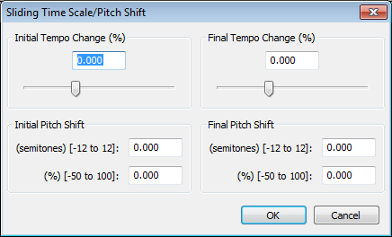

Sliding Time Scale / Pitch Shift
From Audacity Manual
Tempo changes made without selecting a pitch change preserve the original pitch, and pitch changes made without selecting a tempo change preserve the original tempo. By changing only one of tempo and pitch and choosing the same initial and final value, you can use Sliding Time Scale / Pitch Shift in the same way as Change Tempo or Change Pitch to produce a high quality fixed change. However Sliding Time Scale / Pitch Shift lets you for example set the initial tempo change to -50% while also setting the final tempo change to +20%, the initial pitch change to +3 semitones and the final pitch change to +1 semitones.
Because of the high quality algorithm used, Sliding Time Scale / Pitch Shift is normally slower compared to performing the same effect with Change Tempo or Change Pitch.- Accessed by:
- 
Tempo Change
Initial and final tempo change values can be managed using the slider (which will move in whole number values only) or by entering a value in the box, which can be either a whole number or a number including a fraction.
Initial (%)
The percentage of the original rate required for the beginning of the processed audio. Positive percentages speed the audio up and negative percentages slow the audio down: -50% is half-speed, 0% is unchanged, 50% is 1.5 times the original speed, 100% is double speed and so on.
Final (%)
The percentage of the original rate required for the end of the processed audio.
Pitch Shift
Initial (semitones)
Enter the pitch shift in semitones (half steps) required for the beginning of the processed audio.
Initial (%)
Alternatively, enter the pitch shift as a percentage of the original frequency as required for the beginning of the processed audio.
Final (semitones)
Enter the pitch shift in semitones (half steps) required for the end of the processed audio.
Final (%)
Alternatively, enter the pitch shift as a percentage of the original frequency as required for the end of the processed audio.